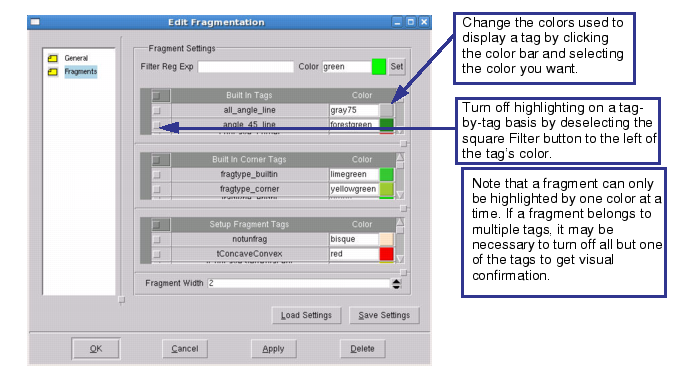

In the Calibre RET toolset, a tagging script
serves several purposes. The primary purposes are to help analyze
EPEs when running the Calibre ORC batch tool and to perform OPC
on selected edges only.
In
order to debug tagging scripts, you need to see exactly which fragments
meet each tag description. You do this by viewing the fragmentation
with different tags displayed as a different color.
Procedure
- In Calibre
WORKbench, select a small section of the layout by holding down
the right mouse button and dragging diagonally from left to right.
Smaller areas are simulated more quickly. Select a
large enough area that all significant features (long edges, line
ends, space ends, and so on) are represented.
- Load the
setup file in the RET Flow Tool.
- Select .
- In the
RET Flow Tool, select .
- Right-click
the flow icon and select Add Existing Setup.
- Browse
to your setup file. The navigator automatically filters for .in files;
you may need to set it to show all files to see your setup file.
- In the
Setup Layers Mapping area at the bottom left of the RET Flow Tool
window, set the layout layer number using the WB# - Name dropdown
list for each setup file layer.
- To fragment
the layout, click the Frag button.
Thin lines mostly perpendicular to the feature edges
appear in the layout. If you hide all layers but the selected one,
you can see the thin lines intersect colored sections of the edges.
The colored sections are the fragments. The colors represent one
of the tags assigned to the fragment.
- In the
Calibre WORKbench main window, select to open the Edit
Fragmentation dialog box.
The box hows the colors used to display each of the
built-in tags, plus any user-defined tags. The initially displayed
pane controls the general fragment properties, such as the dots
indicating fragment endpoints.
To access the tag-specific settings, click Fragments on
the left of the Edit Fragmentation dialog box.

Note: Fragments often
have many different tags assigned to them. Because a fragment can
be displayed in only one color at a time, it may belong to a tag
that is “shown,” yet not displayed, with that color. To see whether
or not the fragment belongs to a particular tag, you must hide all
colors that also highlight that fragment.
- If you
are dissatisfied with the tags applied to fragments, adjust the
setup file in the RET Flow Tool and then click Update (above
the Setup Layers Mapping) to make the changes to the setup in memory.
Click Frag again to run the updated script.
The Calibre RET toolset supports
special tagging options that make it easier for you to organize
ORC data and visually inspect EPEs in the design.
newTag -how EPE —
Tags fragments with EPEs in the specified range.
newTag -how epeSensitivity —
Tags fragments with EPEs having a sensitivity to process variation
that is within the specified range.
tags2boxes —
Generates a new layer containing rectangles drawn around each EPE region.
You can use the Calibre WORKbench or Calibre
LITHOview application to test and debug any of these tagging options
except tags2boxes, which requires the Calibre RET batch tools.
- When you
are satisfied with your tagging script, in the RET Flow Tool select .